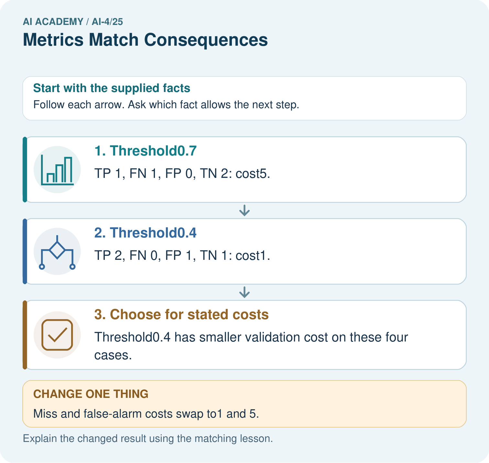
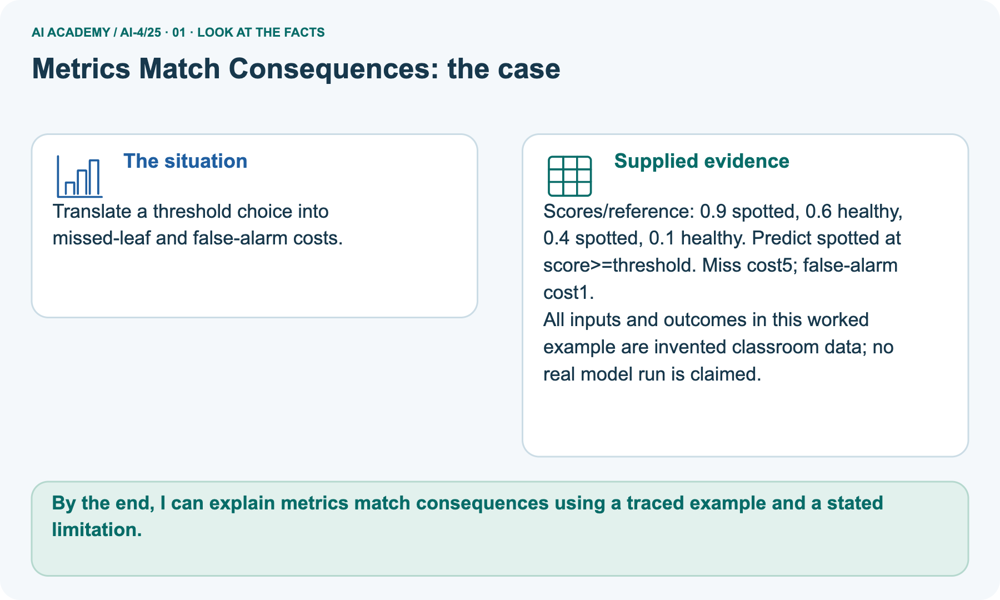
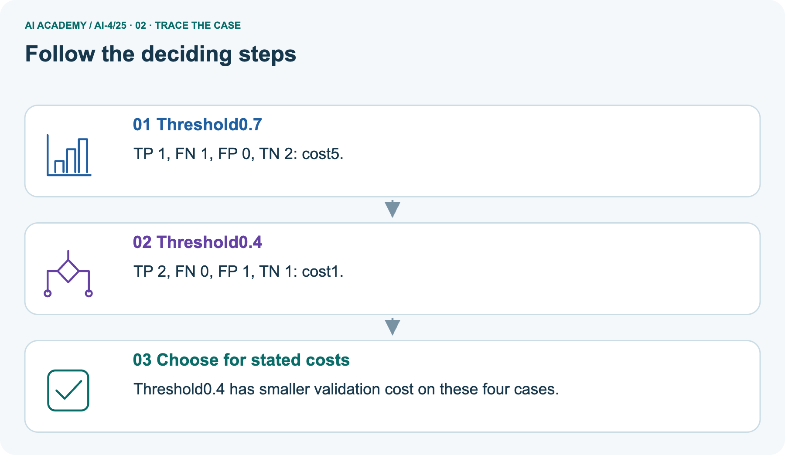
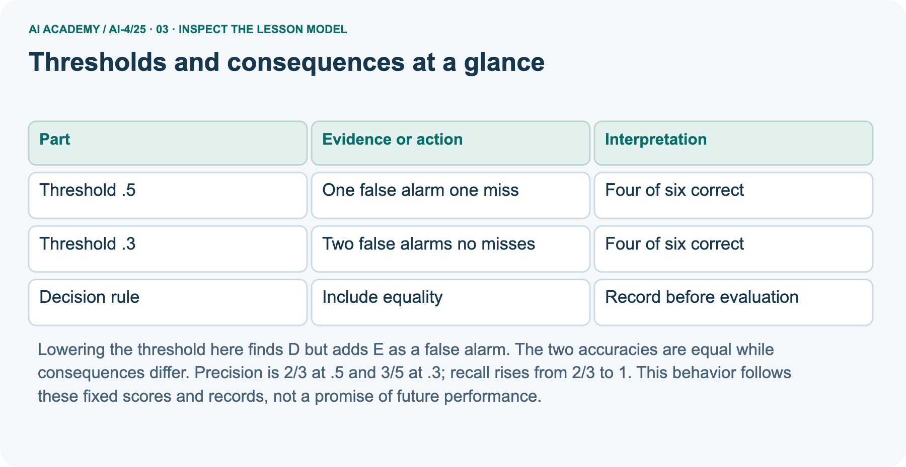
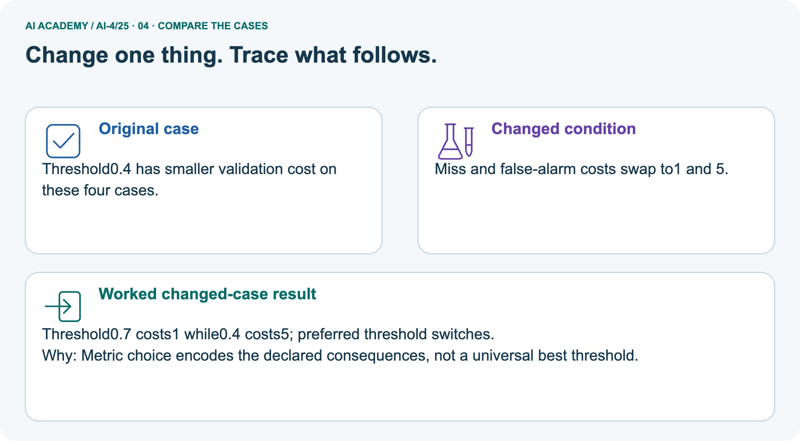
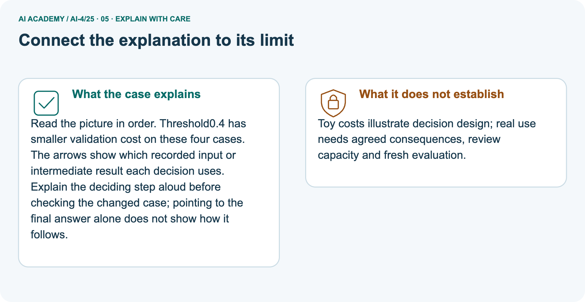
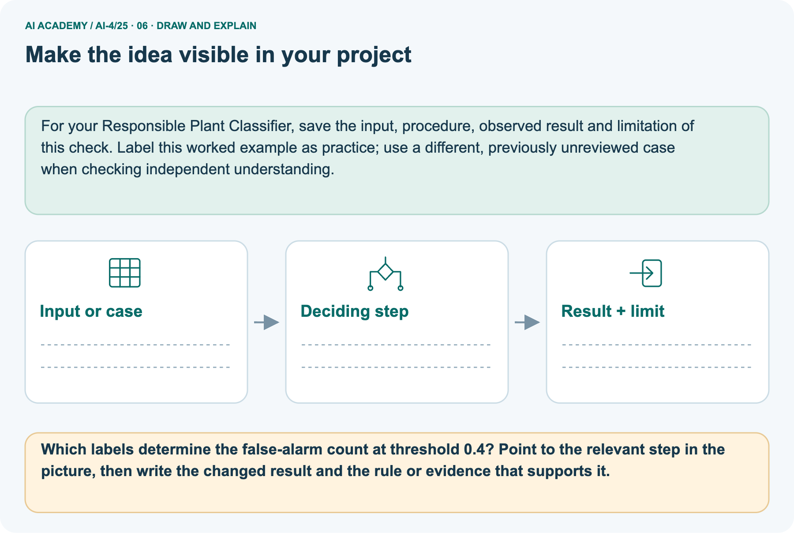

AI Academy · Level 4 · Grade 9 · Week 25 · Workbook
Metrics Match Consequences
Learn to understand, design, build, test and explain AI systems responsibly.
Project: Responsible Plant Classifier
THE CONNECTED WEEK
One readable metric-council decision record.
Trace threshold counts,apply costs and explain what the metrics cannot establish.
Keep one habit: W1–W3/W5 → selected fresh four-score task → project metric suite → changed-case return.
Main lesson · Section 1
Recall · Retrieve before notes
Keep this task’s complete inputs, stated rule and support record together.
Task and evidence record
Try the recall before opening notes. Then use a different colour or a labelled second line to correct your explanation.
Without opening the old lesson, explain one key idea from Train, Validation, Test. Give an example and a mistake that the idea helps you avoid.
Without opening the old lesson, explain one key idea from Train a Regression Model. Give an example and a mistake that the idea helps you avoid.
Without opening the old lesson, explain one key idea from Regression and Residuals. Give an example and a mistake that the idea helps you avoid.
Train, Validation, Test
Train a Regression Model
Regression and Residuals
Main lesson · Section 12
W1 · Explain the mechanism
Keep this task’s complete inputs, stated rule and support record together.
Task and evidence record
Main A0.9 blocked, B0.7 clear, C0.6 blocked, D0.4 blocked, E0.3 clear, F0.1 clear; positive when score>=threshold. At0.5:TP 2/FP 1/FN 1/TN 2, 3 alerts; at0.3:TP 3/FP 2/FN 0/TN 1, 5 alerts. Both4/6 correct. Main FP 1/FN 4 costs5 and2; changed FP 4/FN 1 costs5 and8. Separate picture 4 scores0.9 spotted, 0.6 healthy, 0.4 spotted, 0.1 healthy; threshold 0.7/0.4 under FP 1/FN 5 cost5/1, swapped FP 5/FN 1 cost1/5.
Council capacity 3is a separate stated batch constraint; the independent four-score task has no supplied capacity.
Which IDs are positive at .5 and .3?
Main lesson · Section 13
W2 · Trace the current experiment
Keep this task’s complete inputs, stated rule and support record together.
Task and evidence record
Main A0.9 blocked, B0.7 clear, C0.6 blocked, D0.4 blocked, E0.3 clear, F0.1 clear; positive when score>=threshold. At0.5:TP 2/FP 1/FN 1/TN 2, 3 alerts; at0.3:TP 3/FP 2/FN 0/TN 1, 5 alerts. Both4/6 correct. Main FP 1/FN 4 costs5 and2; changed FP 4/FN 1 costs5 and8. Separate picture 4 scores0.9 spotted, 0.6 healthy, 0.4 spotted, 0.1 healthy; threshold 0.7/0.4 under FP 1/FN 5 cost5/1, swapped FP 5/FN 1 cost1/5.
Council capacity 3is a separate stated batch constraint; the independent four-score task has no supplied capacity.
Give TP, FP, FN, TN at both thresholds.
Main lesson · Section 14
W3 · Repair the reasoning
Keep this task’s complete inputs, stated rule and support record together.
Task and evidence record
Main A0.9 blocked, B0.7 clear, C0.6 blocked, D0.4 blocked, E0.3 clear, F0.1 clear; positive when score>=threshold. At0.5:TP 2/FP 1/FN 1/TN 2, 3 alerts; at0.3:TP 3/FP 2/FN 0/TN 1, 5 alerts. Both4/6 correct. Main FP 1/FN 4 costs5 and2; changed FP 4/FN 1 costs5 and8. Separate picture 4 scores0.9 spotted, 0.6 healthy, 0.4 spotted, 0.1 healthy; threshold 0.7/0.4 under FP 1/FN 5 cost5/1, swapped FP 5/FN 1 cost1/5.
Council capacity 3is a separate stated batch constraint; the independent four-score task has no supplied capacity.
Calculate costs with FP cost 1 and FN cost 4.
Main lesson · Section 16
W5 · Plan the next check
Keep this task’s complete inputs, stated rule and support record together.
Task and evidence record
Main A0.9 blocked, B0.7 clear, C0.6 blocked, D0.4 blocked, E0.3 clear, F0.1 clear; positive when score>=threshold. At0.5:TP 2/FP 1/FN 1/TN 2, 3 alerts; at0.3:TP 3/FP 2/FN 0/TN 1, 5 alerts. Both4/6 correct. Main FP 1/FN 4 costs5 and2; changed FP 4/FN 1 costs5 and8. Separate picture 4 scores0.9 spotted, 0.6 healthy, 0.4 spotted, 0.1 healthy; threshold 0.7/0.4 under FP 1/FN 5 cost5/1, swapped FP 5/FN 1 cost1/5.
Council capacity 3is a separate stated batch constraint; the independent four-score task has no supplied capacity.
Why not select the threshold with the lowest final-test cost?
Main lesson · Section 4
Try alone · Selected experiment task
Keep this task’s complete inputs, stated rule and support record together.
Task and evidence record
For this new four-record task, “same cost”means the main rule:false alarm 1 point, miss 4 points. Use blocked positive and score>=threshold, including equality at0.5 and0.2. No review-capacity constraint is supplied for this task; do not import the separate council batch capacity. Report the preference among these two thresholds under the stated fictional costs without a final-test or real-world claim.
Scores/references are .8/blocked,.5/clear,.2/blocked,.1/clear. Compare thresholds .5 and .2 using the same cost.
Attempt this case before feedback. Record any help. Earlier examples below are further practice; a case already practised with feedback cannot establish fresh transfer.
Independent case: Apply independently
Main lesson · Section 9
Project · Keep the experiment evidence
Keep this task’s complete inputs, stated rule and support record together.
Task and evidence record
Approve the Plant Classifier metric suite: accuracy for context, spotted precision/recall, confusion matrix, and subgroup slices.
The project change and evidence I will keep
Main lesson · Section 17
Feedback · Repair and return
Keep this task’s complete inputs, stated rule and support record together.
Task and evidence record
Revisit this idea with your teacher after a delay. Familiarity is different from explaining and using it on a changed case.
| Evidence | My record |
|---|---|
| Worked alone / hint / model | |
| First step I repaired and why | |
| New case checked later; date and result | |
| What I can now explain without notes | |
| One remaining question |
Main lesson · Section 10
Finish · Judge your evidence
Keep this task’s complete inputs, stated rule and support record together.
Task and evidence record
- I can explain the mechanism.
- I can show evidence.
- I can handle a changed case.
- I can name a limit.
Mark each as not yet, with help or independently, and attach supporting work.
Teacher review ____________________ Next step ____________________
Reference bank and extra practice
Choose the reference that helps your next step.
Reference · Supported W2 record
Reference · Section 2
Reference · Supported W2 record
Keep this task’s complete inputs, stated rule and support record together.
Task and evidence record
Use W2: Count the consequences for Thresholds and consequences. Record the answer once; the lesson and workbook refer to the same attempt.
| Given inputs | Procedure I chose | Middle steps | Result and check |
|---|---|---|---|
Extra practice · Individual reasoning check
Reference · Section 3
Extra practice · Individual reasoning check
Keep this task’s complete inputs, stated rule and support record together.
Task and evidence record
Use the worked case for Thresholds and consequences. Proposed explanation: “A final answer is enough”. Decide whether this explanation is supported.
Point to the step or supplied fact that decides; explain your repair if needed.
Reference · Earlier learning target
Reference · Section 5
Reference · Earlier learning target
Keep this task’s complete inputs, stated rule and support record together.
Task and evidence record
A reviewer can inspect at most 10 alerts daily. Model A flags 20 cases with higher recall; B flags 8 with lower recall. What evidence is needed before choosing a threshold?
Extra practice · Earlier complete case
Reference · Section 6
Extra practice · Earlier complete case
Keep this task’s complete inputs, stated rule and support record together.
Task and evidence record
Spotting alerts can miss disease signs or create unnecessary healthy-leaf reviews.
Connect metrics to consequences.
Show your trace, calculation or evidence
Extra practice · Changed case
Reference · Section 7
Extra practice · Changed case
Keep this task’s complete inputs, stated rule and support record together.
Task and evidence record
Missing a diseased plant is considered more costly than a false alarm, but staff can review only ten alerts daily. Which evaluation trade-off should be discussed?
My independent answer and reason
Week 25 Test and reflect
Extra practice · Design a revealing test
Reference · Section 8
Extra practice · Design a revealing test
Keep this task’s complete inputs, stated rule and support record together.
Task and evidence record
Create a changed input, boundary case or missing-information case. Write the expected answer or safe response before testing.
| Test record | My evidence |
|---|---|
| Changed input or condition | |
| Expected answer or fallback | |
| Observed result | |
| Why the result occurred |
Extra practice · Earlier transfer
Reference · Section 11
Extra practice · Earlier transfer
Keep this task’s complete inputs, stated rule and support record together.
Task and evidence record
A reviewer can inspect at most 10 alerts daily. Model A flags 20 cases with higher recall; B flags 8 with lower recall. What evidence is needed before choosing a threshold?
Record support used: none, hint or teacher explanation.
Reference · Earlier W4 record
Reference · Section 15
Reference · Earlier W4 record
Keep this task’s complete inputs, stated rule and support record together.
Task and evidence record
Cost and decision rules: blocked is positive; predict blocked when score is at least the threshold, including equality. A false positive costs 1 unit and a false negative costs 4 units. Total cost = FP + 4 × FN. Compare both thresholds on exactly these four records.
Scores/references are .8/blocked,.5/clear,.2/blocked,.1/clear. Compare thresholds .5 and .2 using the same cost.
Extra practice · Pictured case
Reference · Section 18
Extra practice · Pictured case
Keep this task’s complete inputs, stated rule and support record together.
Task and evidence record
Translate a threshold choice into missed-leaf and false-alarm costs.
Scores/reference: 0.9 spotted, 0.6 healthy, 0.4 spotted, 0.1 healthy. Predict spotted at score>=threshold. Miss cost5; false-alarm cost1.
All inputs and outcomes in this worked example are invented classroom data; no real model run is claimed.
Which labels determine the false-alarm count at threshold 0.4? Point to the relevant step in the picture, then write the changed result and the rule or evidence that supports it.
Support used: alone / hint / worked example. This record is practice evidence.
Project connection: For your Responsible Plant Classifier, save the input, procedure, observed result and limitation of this check.
Label this worked example as practice; use a different, previously unreviewed case when checking independent understanding.



Reference · Project portfolio milestone
Reference · Section 19
Reference · Project portfolio milestone
Keep this task’s complete inputs, stated rule and support record together.
Task and evidence record
Project: Responsible Plant Classifier
Current milestone: Prepare the demonstration. Gather reproducible instructions, evidence, access checks and remaining limitations.
For your Responsible Plant Classifier, save the input, procedure, observed result and limitation of this check.
Label this worked example as practice; use a different, previously unreviewed case when checking independent understanding.
| Evidence to keep | My record |
|---|---|
| This week’s input and deciding step | |
| Prediction and actual result (or labelled paper trace) | |
| One change since the previous checkpoint and why | |
| One error or limit and the next test |
Extra practice · Predict, check and repair
Reference · Section 20
Extra practice · Predict, check and repair
Keep supported feedback separate from the reserved independent case.
First supported question and hint
Translate a threshold choice into missed-leaf and false-alarm costs.
Which labelled step matches this detail? Threshold0.4 has smaller validation cost on these four cases.
1. Threshold0.4
2. Choose for stated costs
3. Threshold0.7
Hint if needed: Read the steps in the pictorial case. Match the supplied detail to the stage that performs or records it.
Practice 1: explain the deciding evidence
Check the first explanation
After your attempt, compare with the supported explanation: Choose for stated costs Threshold0.4 has smaller validation cost on these four cases. Read the picture in order.
Threshold0.4 has smaller validation cost on these four cases. The arrows show which recorded input or intermediate result each decision uses.
Explain the deciding step aloud before checking the changed case; pointing to the final answer alone does not show how it follows.
Changed-case question and hint
Changed-case practice: Miss and false-alarm costs swap to1 and 5. Which conclusion is supported by the supplied facts?
1. This one example guarantees correct results for every future input.
2. We can decide the result without examining the changed input or the procedure.
3. Threshold0.7 costs1 while0.4 costs5; preferred threshold switches.
Hint if needed: Use the changed condition and the deciding step in the pictorial trace. The answer must say what follows from those facts.
Practice 2: explain the deciding evidence
Check the changed explanation
After your attempt, compare with the supported explanation: Threshold0.7 costs1 while0.4 costs5; preferred threshold switches. Metric choice encodes the declared consequences, not a universal best threshold.
Repair and keep the record
Review Train, Validation, Test (ai-4/24). Goal: Select a model using a declared validation rule. Short practice: Why does B’s zero training MAE not settle the original choice?
Point to the relevant step in the picture, then write the changed result and the rule or evidence that supports it.. Return to this week and explain what you changed.
Review Train a Regression Model (ai-4/22). Goal: Fit a line from a declared training candidate set. Short practice: May day3’s evaluation label choose the candidate line?
Point to the relevant step in the picture, then write the changed result and the rule or evidence that supports it.. Return to this week and explain what you changed.
Review Regression and Residuals (ai-4/19). Goal: Distinguish numeric prediction from classification. Short practice: Which statistic reveals the size of errors without cancellation?
Point to the relevant step in the picture, then write the changed result and the rule or evidence that supports it.. Return to this week and explain what you changed.
The browser lab lets you edit the supported Python examples already included in this lesson. Predict first, run, inspect the actual output or error, change one input, then run again.
Keep code, predictions, actual results and a reasoned revision together. On paper, label your result as a trace rather than an execution.
Use Download completed work in the hosted lesson to export your answers, reflections, practice feedback and code-run evidence. Open the HTML copy to read or print it.
Drafts stay in this browser when storage is available; clear drafts on a shared device.
Earlier wording, alternatives and picture transcripts
Use this supported practice once, in the browser or on paper. Keep the reserved independent assessment for a separate first attempt before teacher feedback.
Repair a missing building block
Predict, run and debug
Keep your completed work
Reference · Six-picture response sheets
Reference · Section 21
Reference · Six-picture response sheets
Choose the relevant picture instead of repeating every task.
01. Metrics Match Consequences: the case



Translate a threshold choice into missed-leaf and false-alarm costs. Supplied facts: Scores/reference: 0.9 spotted, 0.6 healthy, 0.4 spotted, 0.1 healthy. Predict spotted at score>=threshold. Miss cost5; false-alarm cost1.
All inputs and outcomes in this worked example are invented classroom data; no real model run is claimed.
Point to the given fact that matters most. Explain why it matters.
02. Follow the deciding steps



Threshold0.7: TP 1, FN 1, FP 0, TN 2: cost5. → Threshold0.4: TP 2, FN 0, FP 1, TN 1: cost1. → Choose for stated costs: Threshold0.4 has smaller validation cost on these four cases.
Point to each numbered stage and explain which recorded input it uses.
03. Thresholds and consequences at a glance



Thresholds and consequences at a glance. Threshold .5 | One false alarm one miss | Four of six correct. Threshold .3 | Two false alarms no misses | Four of six correct.
Decision rule | Include equality | Record before evaluation
Read the labels and values. Explain the relationship the model shows.
04. Change one thing. Trace what follows.



Original case: Threshold0.4 has smaller validation cost on these four cases. Changed condition: Miss and false-alarm costs swap to1 and 5. Expected result: Threshold0.7 costs1 while0.4 costs5; preferred threshold switches.
Reason: Metric choice encodes the declared consequences, not a universal best threshold.
Predict before checking the worked changed-case result. Name what changed and what the supplied facts allow you to conclude.
05. Connect the explanation to its limit



Read the picture in order. Threshold0.4 has smaller validation cost on these four cases. The arrows show which recorded input or intermediate result each decision uses.
Explain the deciding step aloud before checking the changed case; pointing to the final answer alone does not show how it follows.
Limit: Toy costs illustrate decision design; real use needs agreed consequences, review capacity and fresh evaluation.
Explain the case, then point to a limit on the claim.
06. Make the idea visible in your project



For your Responsible Plant Classifier, save the input, procedure, observed result and limitation of this check.
Label this worked example as practice; use a different, previously unreviewed case when checking independent understanding. Draw your input, deciding step, result and limit.
Supported question: Which labels determine the false-alarm count at threshold 0.4? Point to the relevant step in the picture, then write the changed result and the rule or evidence that supports it.
Draw your project trace and justify the deciding step using evidence.